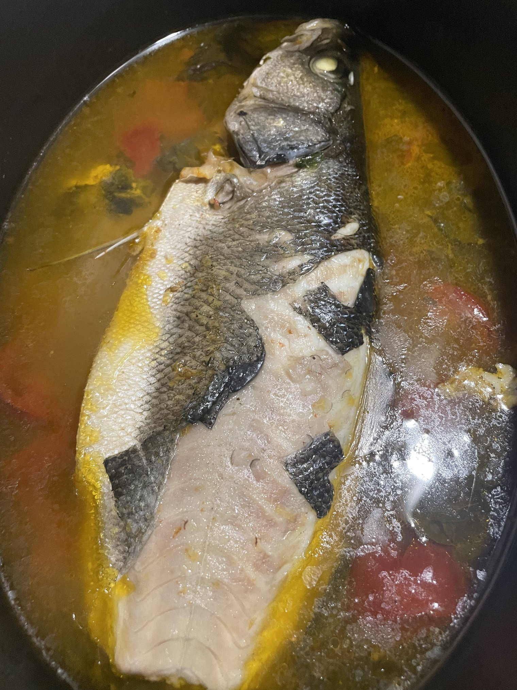

Zuppa di spigola
Ingredienti
2×
- 4 pomodori
- 2 spicchi d'aglio
- prezzemolo
- acqua
- olio d'oliva
- 1 spigola (lubina)
- sale

Preparazione
Passo 1
In una pentola mettere 4 pomodori a pezzi, 2 spicchi d'aglio, un ciuffo di prezzemolo tritato, acqua e olio d'oliva. Cuocere le verdure 15min.
Passo 2
Dopo mettere 1 spigola (lubina) pulita e cuocere a fuoco basso fin che è cotta, circa 15min. Aggiustare di sale.
Riepilogo
4 pomodori
2 spicchi d'aglio
prezzemolo
acqua
olio d'oliva
Cuocere
1 spigola (lubina)
sale
cuocere